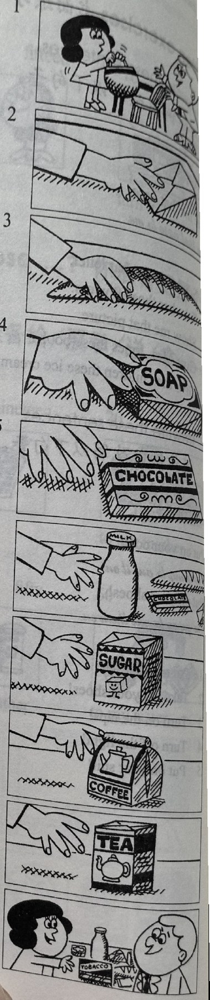
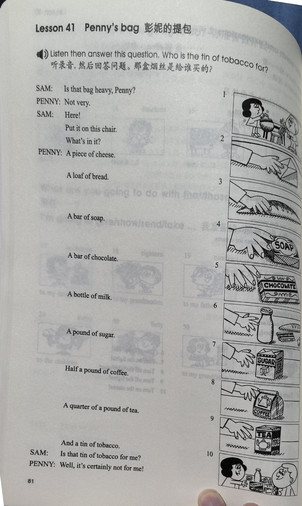
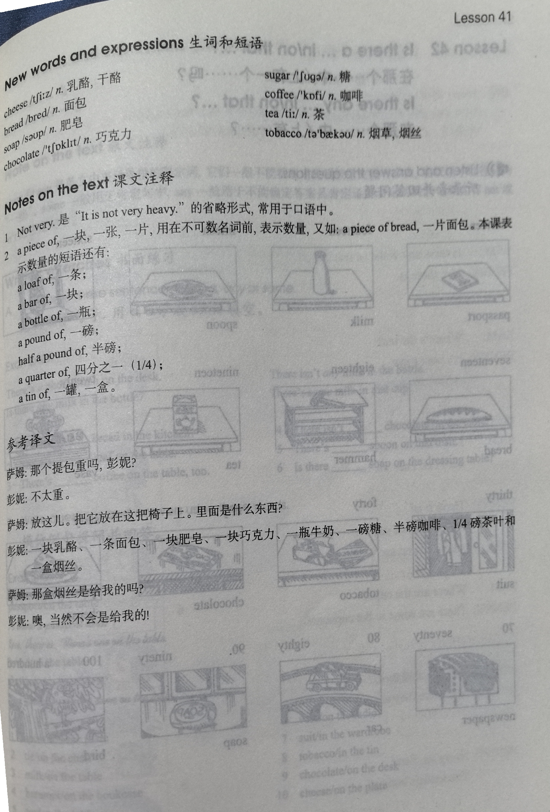

Lesson content · 课文
Lesson 41: Penny's bag · 彭妮的提包
Listen then answer this question. 听录音，然后回答问题。
Who is the tin of tobacco for?
那盒烟丝是给谁买的？
SAM: Is that bag heavy, Penny?
PENNY: Not very.
SAM: Here! Put it on this chair. What’s in it?
PENNY: A piece of cheese.
A loaf of bread.
A bar of soap.
A bar of chocolate.
A bottle of milk.
A pound of sugar.
Half a pound of coffee.
A quarter of a pound of tea.
And a tin of tobacco.
SAM: Is that tin of tobacco for me?
PENNY: Well, it’s certainly not for me!

New words and expressions · 生词和短语
| Word · 单词 | Pronunciation · 音标 | Meaning · 词义 |
|---|---|---|
| cheese | /tʃiːz/ | n. 乳酪，干酪 |
| bread | /bred/ | n. 面包 |
| soap | /səʊp/ | n. 肥皂 |
| chocolate | /ˈtʃɒklət/ | n. 巧克力 |
| sugar | /ˈʃʊɡə/ | n. 糖 |
| coffee | /ˈkɒfi/ | n. 咖啡 |
| tea | /tiː/ | n. 茶 |
| tobacco | /təˈbækəʊ/ | n. 烟草，烟丝 |
Notes on the text · 课文注释
- Not very. 是“It is not very heavy”的省略形式，常用于口语中。
- a piece of，一块，一张，一片，用在不可数名词前，表示数量，又如：a piece of bread，一片面包。本课表示数量的短语还有：
a loaf of，一条；
a bar of，一块；
a bottle of，一瓶；
a pound of，一磅；
half a pound of，半磅；
a quarter of，四分之一（1/4）；
a tin of，一罐，一盒。
Chinese translation · 参考译文
萨姆：那个提包重吗，彭妮？
彭妮：不太重。
萨姆：放这儿。把它放在这把椅子上。里面是什么东西？
彭妮：一块乳酪、一条面包、一块肥皂、一块巧克力、一瓶牛奶、一磅糖、半磅咖啡、1/4磅茶叶和一盒烟丝。
萨姆：那盒烟丝是给我的吗？
彭妮：噢，当然不会是给我的！
Practice · 课文练习
Understand the lesson · 课文理解
Comprehension · 理解题
Answer the question about the lesson text. 根据课文回答问题。
-
comprehension: Comprehension · 理解题 — Who is the tin of tobacco for?
Practice worksheet · 配套练习
A. Dialogue
Read this dialogue. Fill in the missing words. 填空。
-
worksheet: A. Dialogue — Sam: Here, put that ____ bag on this chair, Penny. What’s ____ it?
Penny: A ____ of cheese. A ____ of bread. A ____ of soap. A ____ of chocolate. A ____ of milk. A ____ of sugar. Half a ____ of coffee. A quarter of a pound of ____. And a ____ of tobacco.
Sam: Is that tin of ____ for me?
Penny: Well, it’s ____ not for me!
B. Vocabulary
Match the measures to the remaining words and write a shopping list: milk, sugar, tobacco, tea, chocolate, cheese. 搭配左右框中的词，并写出一张购物清单。
Example · 例句
a piece of cheese
-
worksheet: B. Vocabulary — a bar of ____
-
worksheet: B. Vocabulary — a tin of ____
-
worksheet: B. Vocabulary — a pound of ____
-
worksheet: B. Vocabulary — a bottle of ____
-
worksheet: B. Vocabulary — half a pound of ____
C. Numbers
Write these numbers in words. 用英语数词表示以下数字。
Example · 例句
13 → thirteen
-
worksheet: C. Numbers — 57
-
worksheet: C. Numbers — 86
-
worksheet: C. Numbers — 30
-
worksheet: C. Numbers — 65
-
worksheet: C. Numbers — 98
-
worksheet: C. Numbers — 41
-
worksheet: C. Numbers — 72
Original images · 原图对照
Expand a page to compare it with the transcription. Open the original in a new tab to zoom in.
展开原图核对文字，也可以在新标签页打开原图放大查看。
Lesson text and oral practice · 课文与口头练习
Open original · 打开原图 ↗ Download original · 下载原图


Vocabulary, notes and written exercises · 生词、注释与书面练习
Open original · 打开原图 ↗ Download original · 下载原图



Grammar practice · 语法练习
I. Match the phrases in Column A with the words in Column B
There may be repetitions.
Column B: a. milk; b. tobacco; c. coffee; d. tea; e. cake; f. bread; g. water; h. ink; i. chocolate; j. paper; k. beer; l. sugar.
- 1. a piece of
- 2. a slice of
- 3. a bar of
- 4. a bottle of
- 5. a cup of
- 6. a tin of
- 7. a loaf of
- 8. a pound of
- 9. a glass of
- 10. a pint of
II. Choose the correct phrases in the box to complete the dialogues
Phrase box: a piece of paper; a bottle of ink; a tin of tobacco; half a pound of sugar; a bar of chocolate; a loaf of bread; a cup of tea; a bottle of milk.
- 1. I'm going to write a letter. Is there any paper on the desk?
Yes, there is.
Give me ..., please.
Give me a piece of paper, please.
- 2. They're hungry. Is there any bread in the refrigerator?
Yes, there is.
Give them ..., please. - 3. We're going to cook a meal. Is there any sugar?
Yes, there is.
Give us ..., please. - 4. We are thirsty. Is there any milk in the kitchen?
Yes, there is.
Give us ..., please. - 5. The boy is crying. Is there any chocolate in the box?
Yes, there is.
Give him ..., please. - 6. My son is going to do his homework. Is there any ink here?
Yes, there is.
Give him ..., please. - 7. We want to smoke. Is there any tobacco in the box?
Yes, there is.
Give us ..., please. - 8. She's thirsty. Is there any tea here?
Yes, there is.
Give her ..., please.
III. Fill in the blanks with a, an, some or any
- 1. Here is ... cup. There is ... water in the cup.
- 2. There is ... pencil on the desk, but there isn't ... paper there.
- 3. The cat is drinking ... milk.
- 4. There is ... orange and ... apple in my bag.
- 5. Give me ... piece of paper, ... pen and ... ink, please.
- 6. I haven't ... coffee, but I have ... tea. Would you like ... tea?
- 7. There is ... chalk in the box and ... ink in the bottle, but there isn't ... pen or ... pencil.
- 8. I'm going to give her ... flowers. She's not very well.
Your notes and answers
Use this space for longer responses or exercises that do not have an individual answer box.